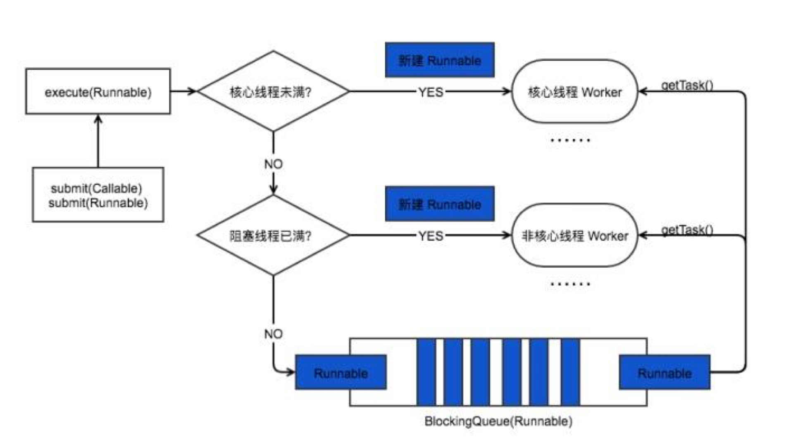
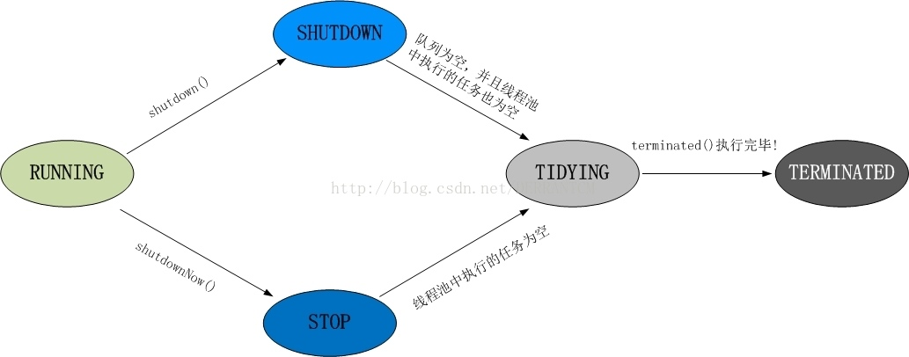

Java 并发 - 线程池
线程池
意义
因为线程的创建与销毁都是很消耗资源的。所以需要一种维护线程资源的手段，就是线程池。
线程池有以下优点：
- 降低资源消耗。通过复用已存在的线程和降低线程关闭的次数来尽可能降低系统性能损耗。
- 提升系统响应速度。通过复用线程，省去创建线程的过程，因此整体上提升了系统的响应速度。
- 提高线程的可管理性。线程是稀缺资源，如果无限制的创建，不仅会消耗系统资源，还会降低系统的稳定性，因此，需要使用线程池来管理线程。
创建
ThreadPoolExecutor(
int corePoolSize, // 维护的核心线程容量，空闲也不会被回收
int maximumPoolSize, // 最大线程容量
long keepAliveTime, // 超过 corePoolSize 之后的“临时线程”的存活时间。
TimeUnit unit, // keepAliveTime 的单位
BlockingQueue<Runnable> workQueue, // 用于保存任务的阻塞队列
ThreadFactory threadFactory, // 创建线程的工厂类，比如说设置名称
RejectedExecutionHandler handler) // 饱和状态需要采取的策略
线程池的执行过程为：
- 如果运行线程小于
corePoolSize则创建新的线程来运行任务。 - 如果运行线程个数大于
corePoolSize则将任务加入workQueue。 - 如果
workQueue已满则创建新的线程。 - 如果线程个数大于
maximumPoolSize则采取RejectedExecutionHandler饱和策略。

饱和后的拒绝策略有四种：
AbortPolicy： 直接拒绝所提交的任务，并抛出RejectedExecutionException异常；CallerRunsPolicy：只用调用者所在的线程来执行任务；DiscardPolicy：不处理直接丢弃掉任务；DiscardOldestPolicy：丢弃掉阻塞队列中存放时间最久的任务，执行当前任务
类型
这里还可以通过 Executors 工具类进行线程池的创建，可以指定以下几种类型
FixedThreadPool：返回一个固定线程数量的线程池。- 当新的任务提交时，若有空闲线程则执行。否则进入一个阻塞队列直到有线程空闲。
- 因为限制了线程的最大数量，所以适用于负载较重的场景。
SingleThreadExecutor：返回一个只有一个线程的线程池。- 当新的任务提交时，若有线程空闲则执行。否则进入一个阻塞队列直到线程空闲。
- 适用于顺序执行任务的场景。
CachedThreadPool：返回一个可调整线程数量的线程池。- 如果有空闲线程可以复用，则会优先使用可复用的线程。若所有线程均在工作，又有新的任务提交，则会创建新的线程处理任务。所有线程在当前任务执行完毕后，将返回线程池进行复用。
- 适用于执行很多的短期异步任务的小程
ScheduledThreadPoolExecutor： 主要用与延迟任务或定期任务。又分为：ScheduledThreadPoolExecutor（包含多个线程）- 适用于需要多个后台执行周期任务，同时为了满足资源管理需求而需要限制后台线程的数量的应用场景，
SingleThreadScheduledExecutor（只包含一个线程）两种。- 适用于需要单个后台线程执行周期任务，同时保证顺序地执行各个任务的应用场景。
但是一般不推荐使用这种方式来创建，因为其实只是对 ThreadPoolExecutor 进行了封装，过于简单不够友好。
还有推荐使用使用 guava 提供的 ThreadFactoryBuilder 来创建线程池。
执行
线程池可以执行实现了 Runnable 接口或 Callable 接口的类。区别在于前者会不会返回结果，后者会返回结果。那么 execute 和 submit 的区别也在于前者不会返回，后者会返回。
threadPoolExecutor.execute(new Runnable() {
@Override
public void run() {
try {
Thread.sleep(5000);
} catch (InterruptedException e) {
e.printStackTrace();
}
}
});
/////////
Future<?> future=threadPoolExecutor.submit(futureTask);
Object value=future.get()
关闭
线程池通过 shutdown 和 shutdownNow 方法来关闭。这两个方法都是遍历线程池中的线程调用中断方法来关闭线程的。
区别在于：
shutdownNow首先将线程池的状态设置为 STOP，然后尝试停止所有的正在执行和未执行任务的线程，并返回等待执行任务的列表。shutdown只是将线程池的状态设置为 SHUTDOWN 状态，然后中断所有没有正在执行任务的线程。
即 shutdown 会等待线程池把所有任务执行完。
只要调用了这两个方法 isShutdown() 就会返回 true。
所有线程都成功关闭 isTerminated 才会返回 true。
生命周期

RUNNING，能够接收新任务，以及对已添加的任务进行处理。SHUTDOWN，不接收新任务，但能处理已添加的任务。STOP，不接收新任务，不处理已添加的任务，并且会中断正在处理的任务。TIDYING，当所有的任务已终止时，会调用钩子函数terminated()。TERMINATED，线程池彻底终止。
参数设定
不同的任务需要采取不同的线程池大小。
这里给出两种可能的情况：
- 如果是 CPU 密集的任务使用 Ncpu+1 的线程数量。
- 如果是 IO 密集的任务使用 2xNcpu 的线程数量。
Runtime.getRuntime().availableProcessors() 可以获得 CPU 数量。
ScheduledThreadPoolExecutor
ScheduledThreadPoolExecutor 继承了 ThreadPoolExecutor 可以用来执行延后执行异步任务或者周期性任务并实现了一个重要的接口 ScheduledExecutorService 。用于执行延迟的异步任务和周期任务。
ScheduledThreadPoolExecutor 的实现借助了两个重要的内部类 DelayedWorkQueue 和 ScheduledFutureTask。
ScheduledFutureTask 线程池中的任务（即实现了 Runnable 或 Callable 接口的类）会被封装成 FutureTask 类。然后又为了实现可以延迟执行和周期性执行，任务又被转化成 ScheduledFutureTask。
使用 schedule，scheduleAtFixedRate 和 scheduleWithFixedDelay 方法就调用了这个内部类。
DelayedWorkQueue 是用来存储被 ScheduledFutureTask 封装的延时或周期性任务。它是一个基于堆的数据结构，按照时间先后进行排序。
即任务为封装成 ScheduledFutureTask 类，并新建 Worker 类从 DelayedWorkQueue 获取任务并执行。
详细源码分析在参考中。